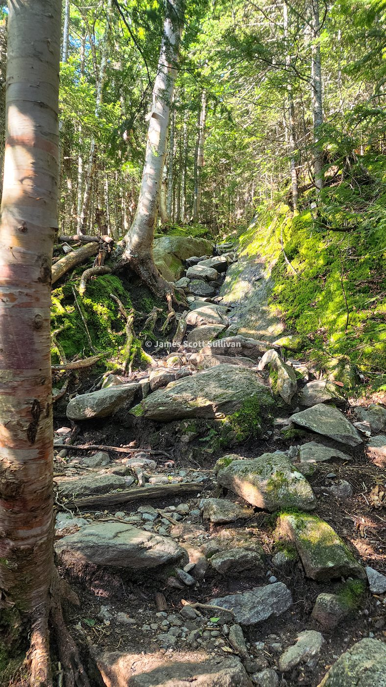
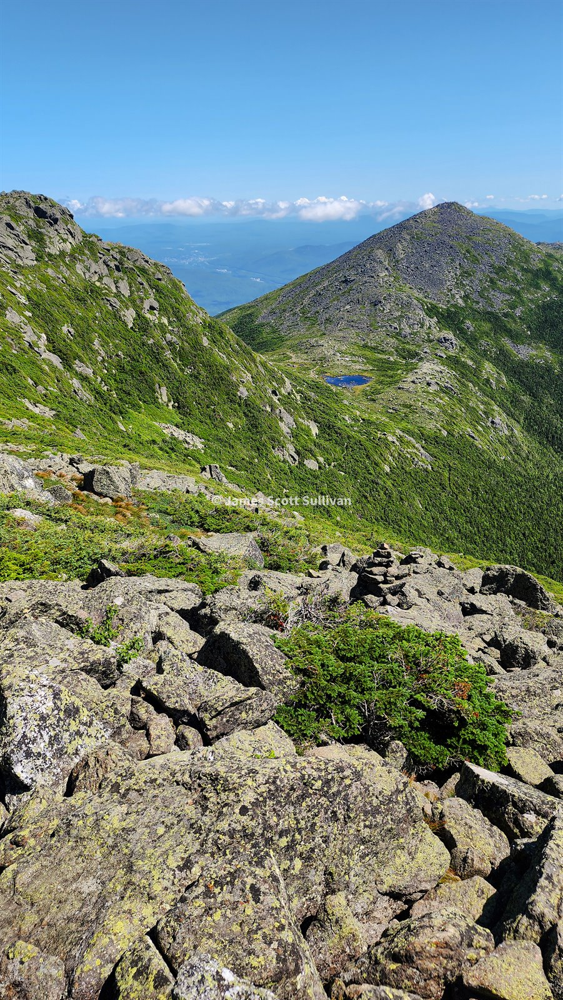
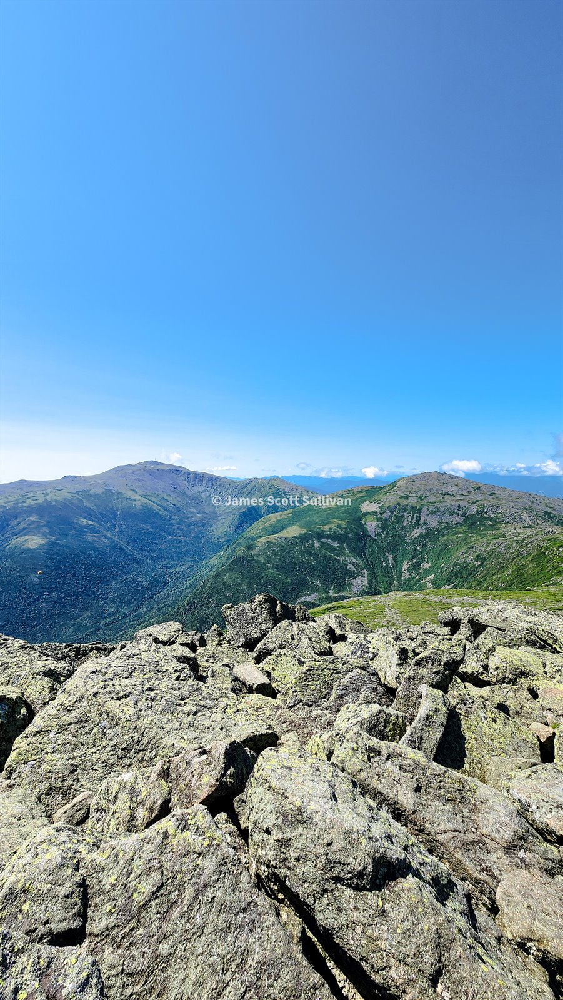
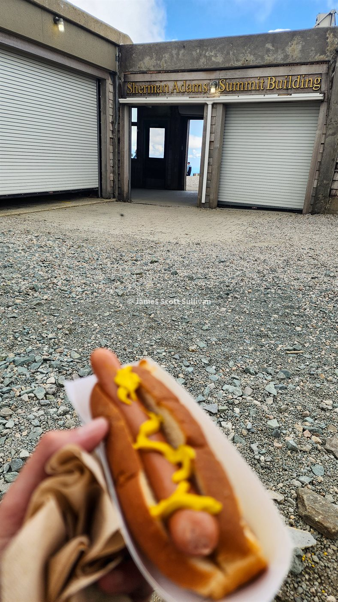
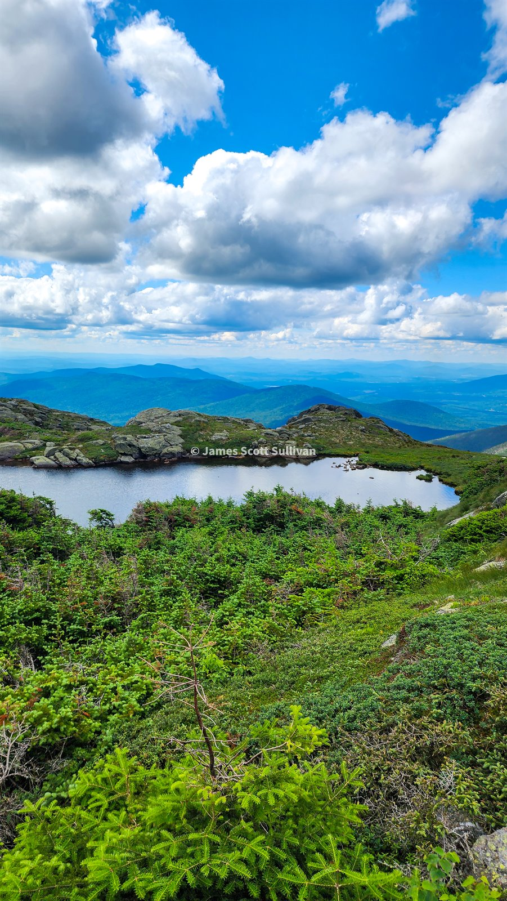
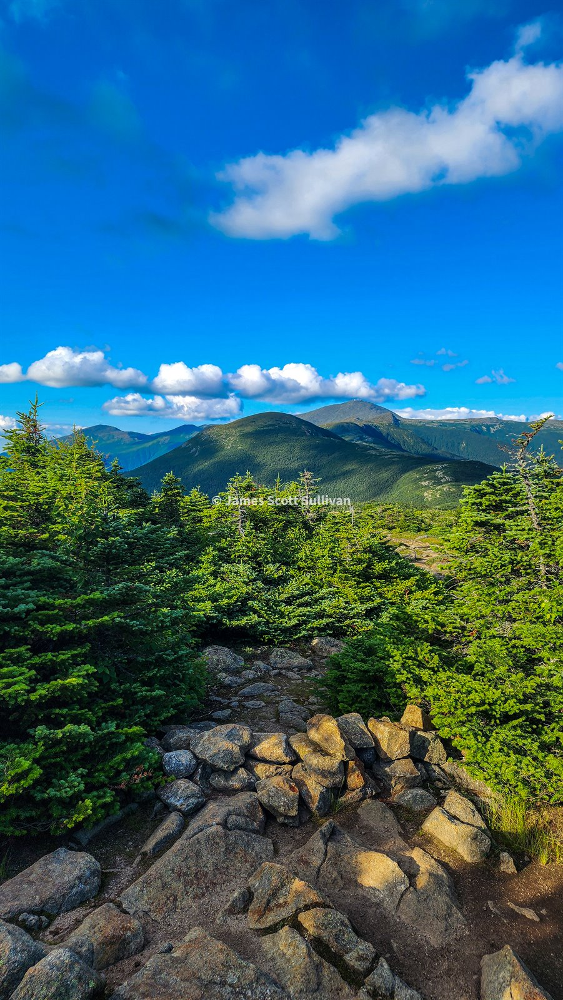

Coming home from the road trip did not exactly settle me down. I was still unemployed, summer was getting late, and I needed something to point myself at. I had wanted to do a Presidential Traverse for years. I had also just spent weeks living out of my car, hiking whenever I felt like it, and accidentally training my ass off across the country. The timing was suspiciously good.
So that was the goal. One big White Mountains day. Start at the north end, keep moving south, and see if I could finally do the full thing the way I had pictured it for a long time.
I started up Valley Way in the cool shade before the range opened up. It was one of those classic Whites climbs where the trail just keeps going straight uphill through roots, rocks, and a brook that makes the whole morning feel damp and alive. I knew once I got above treeline it was going to be a completely different world, so I enjoyed the cover while I had it.

Madison came first, but like the Presi likes to do, it made me earn the route twice. I had to peel off for the summit, then backtrack and keep heading for Adams. Somewhere in there I gave up on pretending I was going to stick perfectly to plan. My route was supposed to stay on Gulfside, but I really wanted to walk around Star Lake. Once I realized the detour would just reconnect on the far side, that was that. Of course I went to Star Lake.

That stretch was one of the best parts of the whole day. Looking back toward Madison, out along the Great Gulf, and across into Jefferson Ravine made the range feel bigger and rougher than it ever does on a map. The terrain around there is so good. Rocky, open, a little weird, and full of spots that make you immediately start planning to come back.
By the time I had worked through Adams and Jefferson, the route was completely clear in my head: Madison, Adams, Jefferson behind me, Washington in front of me, then Monroe, Eisenhower, Pierce, and Jackson still stacked down the southern ridge. That is the point where a hike stops being a cool idea and starts feeling like an actual day of work.

I knew Mount Washington was going to be tourist chaos, but I still was not prepared for how hard the whole place would pivot. One minute it was ridgeline solitude and moving weather. The next it was buildings, people everywhere, and that weird mountain-meets-roadside-attraction energy Washington does better than anywhere else. It was so absurd I kind of had to respect it.
And yes, I could not resist the hot dog and Coke. I had been moving for hours, it was being served by a guy in a hot dog costume, and the whole thing was too ridiculous not to lean into. I fought through the crowd for that dog and I absolutely stand by the decision. Worth it.

Washington felt like halftime. I still had Monroe, Eisenhower, Pierce, Jackson, and the long walk back to the car ahead of me. The southern ridge had a different mood than the northern half. Less sharp, more drawn out. Big sky, long lines, clouds sliding through, and that late-day feeling where every summit starts to feel earned in a quieter way.

Monroe, Eisenhower, Pierce, Jackson. Just keep moving. The ridge kept opening and folding back on itself, and every time I looked around it felt like the weather had changed again. That part of the day gets long in the best way. You are tired enough to stop talking in your own head so much. You just keep going and let the range do its thing.
By the finish I could look back and actually see the shape of the whole day stretched out behind me. That was my favorite part. Not just checking the route off, but seeing how cleanly it capped the season. The road trip had already made the summer unforgettable. This felt like the right exclamation point at the end of it.

I had wanted this traverse for years. Getting it done while I still had the time, the fitness, and the itch to keep chasing big days made the whole thing land even harder. It was a hell of a way to end one of the best summers I have ever had.